Chapter 5: The Eukaryotes of Microbiology¶
Introduction¶
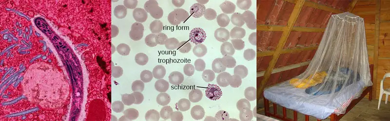
Although bacteria and viruses account for a large number of the infectious diseases that afflict humans, many serious illnesses are caused by eukaryotic organisms. One example is malaria, which is caused by Plasmodium, a eukaryotic organism transmitted through mosquito bites. Malaria is a major cause of morbidity (illness) and mortality (death) that threatens 3.4 billion people worldwide.1 In severe cases, organ failure and blood or metabolic abnormalities contribute to medical emergencies and sometimes death. Even after initial recovery, relapses may occur years later. In countries where malaria is endemic, the disease represents a major public health challenge that can place a tremendous strain on developing economies.
Worldwide, major efforts are underway to reduce malaria infections. Efforts include the distribution of insecticide-treated bed nets and the spraying of pesticides. Researchers are also making progress in their efforts to develop effective vaccines.2 In late 2021, R21/Matrix-M became the first vaccine to be recommended for widespread use by the World Health Organization. At least ten other candidate vaccines are in development. The effort is an multinational one involving governments, universities, nonprofits, philanthropists, and pharmaceutical companies. Much of the recent progress can be credited to organizations within the most affected countries, such as the Malaria Research and Training Center in Mali. Founded by Ogobara Duombo and Yeya Touré in the 1990s, the center has emerged as a primary front-line research driver, including running many of the critical clinical trials that are so important to vaccine development and approval.
5.1 Unicellular Eukaryotic Parasites¶
Learning Objectives
By the end of this section, you will be able to:
- Summarize the general characteristics of unicellular eukaryotic parasites
- Describe the general life cycles and modes of reproduction in unicellular eukaryotic parasites
- Identify challenges associated with classifying unicellular eukaryotes
- Explain the taxonomic scheme used for unicellular eukaryotes
- Give examples of infections caused by unicellular eukaryotes
Clinical Focus: Part 1
Upon arriving home from school, 7-year-old Sarah complains that a large spot on her arm will not stop itching. She keeps scratching at it, drawing the attention of her parents. Looking more closely, they see that it is a red circular spot with a raised red edge (Figure 5.2). The next day, Sarah’s parents take her to their doctor, who examines the spot using a Wood’s lamp. A Wood’s lamp produces ultraviolet light that causes the spot on Sarah’s arm to fluoresce, which confirms what the doctor already suspected: Sarah has a case of ringworm.
Sarah’s mother is mortified to hear that her daughter has a “worm.” How could this happen?
- What are some likely ways that Sarah might have contracted ringworm?
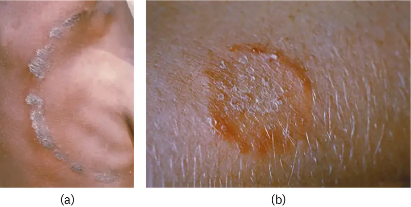
Jump to the next Clinical Focus box.
Eukaryotic microbes are an extraordinarily diverse group, including species with a wide range of life cycles, morphological specializations, and nutritional needs. Although more diseases are caused by viruses and bacteria than by microscopic eukaryotes, these eukaryotes are responsible for some diseases of great public health importance. For example, the protozoal disease malaria was responsible for 584,000 deaths worldwide (primarily children in Africa) in 2013, according to the World Health Organization (WHO). The protist parasite Giardia causes a diarrheal illness (giardiasis) that is easily transmitted through contaminated water supplies. In the United States, Giardia is the most common human intestinal parasite (Figure 5.3). Although it may seem surprising, parasitic worms are included within the study of microbiology because identification depends on observation of microscopic adult worms or eggs. Even in developed countries, these worms are important parasites of humans and of domestic animals. There are fewer fungal pathogens, but these are important causes of illness, as well. On the other hand, fungi have been important in producing antimicrobial substances such as penicillin. In this chapter, we will examine characteristics of protists, worms, and fungi while considering their roles in causing disease.
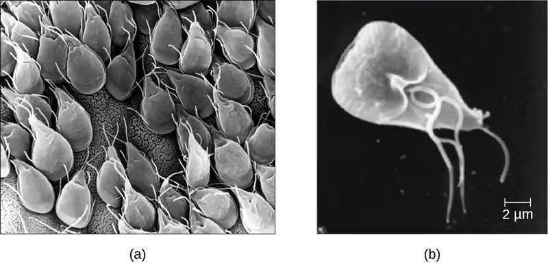
Characteristics of Protists¶
The word protist is a historical term that is now used informally to refer to a diverse group of microscopic eukaryotic organisms. It is not considered a formal taxonomic term because the organisms it describes do not have a shared evolutionary origin. Historically, the protists were informally grouped into the “animal-like” protozoans, the “plant-like” algae, and the “fungus-like” protists such as water molds. These three groups of protists differ greatly in terms of their basic characteristics. For example, algae are photosynthetic organisms that can be unicellular or multicellular. Protozoa, on the other hand, are nonphotosynthetic, motile organisms that are always unicellular. Other informal terms may also be used to describe various groups of protists. For example, microorganisms that drift or float in water, moved by currents, are referred to as plankton. Types of plankton include zooplankton, which are motile and nonphotosynthetic, and phytoplankton, which are photosynthetic.
Protozoans inhabit a wide variety of habitats, both aquatic and terrestrial. Many are free-living, while others are parasitic, carrying out a life cycle within a host or hosts and potentially causing illness. There are also beneficial symbionts that provide metabolic services to their hosts. During the feeding and growth part of their life cycle, they are called trophozoites; these feed on small particulate food sources such as bacteria. While some types of protozoa exist exclusively in the trophozoite form, others can develop from trophozoite to an encapsulated cyst stage when environmental conditions are too harsh for the trophozoite. A cyst is a cell with a protective wall, and the process by which a trophozoite becomes a cyst is called encystment. When conditions become more favorable, these cysts are triggered by environmental cues to become active again through excystment.
One protozoan genus capable of encystment is Eimeria, which includes some human and animal pathogens. Figure 5.4 illustrates the life cycle of Eimeria.
![Eimera life cycle. Envronment sporogony is the process of sporulation occruing outside the host; this requires several days and oxygen. A non-infectous unsporulated oocyst becomes an infectious sporulated oocyst. These enter the gut when swallowed and begin the proess of asexual schizogony. Oocsts realease sporocyts which release sporozoites. Sporozoites invate gut cells and form trophozoites. Trophozoites undergo schizogony (asexual reproduction) to form schizont which releases merozoites. Merozoites can reinfect and become trphozoites again or continue with sezual gametogon where the maerozoites form male and female gamets. The gamees undergo syngamy (sexual reproduction) to form a developing oocyst which mautres into an unsporulated non-infectious oocyst. This brings us back to the beginning of the environment sporogony stage of the cycle.](img/osc-microbio-05-01-trophozoit.webp)
Protozoans have a variety of reproductive mechanisms. Some protozoans reproduce asexually and others reproduce sexually; still others are capable of both sexual and asexual reproduction. In protozoans, asexual reproduction occurs by binary fission, budding, or schizogony. In schizogony, the nucleus of a cell divides multiple times before the cell divides into many smaller cells. The products of schizogony are called merozoites and they are stored in structures known as schizonts. Protozoans may also reproduce sexually, which increases genetic diversity and can lead to complex life cycles. Protozoans can produce haploid gametes that fuse through syngamy. However, they can also exchange genetic material by joining to exchange DNA in a process called conjugation. This is a different process than the conjugation that occurs in bacteria. The term protist conjugation refers to a true form of eukaryotic sexual reproduction between two cells of different mating types. It is found in ciliates, a group of protozoans, and is described later in this subsection.
All protozoans have a plasma membrane, or plasmalemma, and some have bands of protein just inside the membrane that add rigidity, forming a structure called the pellicle. Some protists, including protozoans, have distinct layers of cytoplasm under the membrane. In these protists, the outer gel layer (with microfilaments of actin) is called the ectoplasm. Inside this layer is a sol (fluid) region of cytoplasm called the endoplasm. These structures contribute to complex cell shapes in some protozoans, whereas others (such as amoebas) have more flexible shapes (Figure 5.5).
Different groups of protozoans have specialized feeding structures. They may have a specialized structure for taking in food through phagocytosis, called a cytostome, and a specialized structure for the exocytosis of wastes called a cytoproct. Oral grooves leading to cytostomes are lined with hair-like cilia to sweep in food particles. Protozoans are heterotrophic. Protozoans that are holozoic ingest whole food particles through phagocytosis. Forms that are saprozoic ingest small, soluble food molecules.
Many protists have whip-like flagella or hair-like cilia made of microtubules that can be used for locomotion (Figure 5.5). Other protists use cytoplasmic extensions known as pseudopodia (“false feet”) to attach the cell to a surface; they then allow cytoplasm to flow into the extension, thus moving themselves forward.
Protozoans have a variety of unique organelles and sometimes lack organelles found in other cells. Some have contractile vacuoles, organelles that can be used to move water out of the cell for osmotic regulation (salt and water balance) (Figure 5.5). Mitochondria may be absent in parasites or altered to kinetoplastids (modified mitochondria) or hydrogenosomes (see Unique Characteristics of Prokaryotic Cells for more discussion of these structures).
![a) Paramecium cell with short strands on the outside labeled cilia. An indent in the outer layer is labeled cytostome. A sphere inside the cell at the base of the cytostome is labeled cytoproct. A star shaped structure inside the cell is labeled contractile vacuole. B) Amoeba cell with projections on the outside labeled pseudopods. The outer layer of the cell is labeled ectoplasm and the inner layer is labeled endoplasm. A sphere inside the cell is labeled contractile vacuole. C) Euglena with a single long flagellum on the outside. The outer layer of the cell is labeled etoplasm, the inner layer is labeled endoplasm. A star shaped structure is labeled contractile vacuole.](img/osc-microbio-05-01-locom.webp)
Check Your Understanding
- What is the sequence of events in reproduction by schizogony and what are the cells produced called?
Taxonomy of Protists¶
The protists are a polyphyletic group, meaning they lack a shared evolutionary origin. Since the current taxonomy is based on evolutionary history (as determined by biochemistry, morphology, and genetics), protists are scattered across many different taxonomic groups within the domain Eukarya. Eukarya is currently divided into six supergroups that are further divided into subgroups, as illustrated in (Figure 5.6). In this section, we will primarily be concerned with the supergroups Amoebozoa, Excavata, and Chromalveolata; these supergroups include many protozoans of clinical significance. The supergroups Opisthokonta and Rhizaria also include some protozoans, but few of clinical significance. In addition to protozoans, Opisthokonta also includes animals and fungi, some of which we will discuss in Parasitic Helminths and Fungi. Some examples of the Archaeplastida will be discussed in Algae. Figure 5.7 and Figure 5.8 summarize the characteristics of each supergroup and subgroup and list representatives of each.
![A branching tree diagram with common eukaryotic ancestor at the base. This leads to 5 branches. The top branch branches are classified as Excavata which is divided into 3 groups: diplomonads, parabasalids, and euglenozoans. The next branch splits into 2 branches: alveolates, and stramenopiles. The alveolates are divided into dinoflagellates, apicomplexans and ciliates. The stramenopiles are divided into diatoms, golden algae, brown algae and oomyces. All the alveotate and stramenopile groups are labeled Chromalveolata. The next branch divides into cercozoans, forams and radiolarians. These are all labeled rhizaria. The next branch divides into the red algae, chlorophytes (green algae), charophytes (green algae) and land plant. Thesea re all labeldd archaeplastidia. The next branch splits into 2. The top branch divides into slime molds, gymnamoebas and entamoebas. These are all labeled amoebozoa. The bottom branch divides into nucleariids, fungi, choanoflagellates, and animals. These are all labeled opisthokonta.](img/osc-microbio-05-01-taxon.webp)
![Table titled: the eukaryote supergroups and some example species. There are 5 columns in the table: supergroup, subgroup, distinguishing features, examples and clinical notes. Supergroup Exacavata is divided into 3 subgroups: fornicate, parabasalids, euglenozoans. Fornicata have the following distinguishing features: form cysts, pair of equal nuclei, no mitochondria, often parasitic, four free flagella. An example is giardia lamblia which causes giardiasis. Parabasalids have the following distinguishing features: no mitochondria, four free flagella, one attached flagellum, no cysts, parasitic or symbiotic, basal bodies, kinetoplastids. An example is Trichomonas which causes trichomoniasis. Euglenozoans have the following distinguishing features: photosynthetic or heterotrophic, flagella. Examples include: Euglena which does not cause disease, Trypanosoma which causes African sleeping sickness and Chagas disease, Leishmanial which causes leishmaniasis. The supergroup Chromalveolata is divided into 4 subgroups: dinoflagellates, apicomplexans, ciliates, and oomyctes/peronosporomycetes. Dinoflagellates have the following distinguishing features: cellulose theca and two dissimilar flagella. Examples include Gonyaulax which causes red tides, Alexandrium which causes paralytic shellfish poisoning, and Pfiesteria which causes harmful algal blooms. Apicomplexans have the following distinguishing features: intracellular parasite and apical organelles. Examples include Plasmodium which causes malaria, Cryptosporidium which causes cryptosporidiosis, Theileria (Babesia) which causes babeiosis, and Toxoplasma which causes Tosoplasmosis. Ciliates have the characteristic of cilia. Examples include Balantidium which causes Balantidiasis. Paramecium and Stentor which do not cause diseas. Oomycetes / peronosporomycetes have the following distinguishing features: water molds, generally diploid, cellulose cell wall. An example is Phytophthora which causes diseases in crops.](img/osc-microbio-05-01-groups1.webp)
![Table titled: the eukaryote supergroups and some example species. There are 5 columns in the table: supergroup, subgroup, distinguishing features, examples and clinical notes. The supergroup Rhizaria is divided into 3 subroups: Foraminifera, Radiolaria, and Cerozoa. Foraminifer have the following distinguishing features: amoeboid, thereadlike pseudopodia, calclium carbonate shells. An example is Astrolonche which does not cause disease. Radiolaria have the following distinguishing features: amoeboid, threadlike pseudopodia, silica shells. An example is Actinomma which does not cause disease. Cerozoa have the following distinguishing features: amoeboid, threadlike pseudopodia, complex shells, parasitic forms. Examples include Spongospora subterranean which causes powdery scab (potato disease) and Plasmodiophora brassicae which causes cabbage clubroot. Supergroup Archaeplastida is divided into 2 groups: red algae and Chlorophytes. Red algae have the following distinguishing features: chlorophyll a, phycoerythrin, phycocyanin, flodean starch, agar in cell walls. Examples include Gelidium and Gracilaria which are sources of agar. Chlorophytes have the following distinguishing features: chlorphyll a, chlorophyll b, cellulose cell walls, starch storage. Examples include Acetabularia and Ulva which do not cause disease. Supergroup Amoebozoa is divided into 2 subgroups: slime molds and entamoebas. Slime molds have plasmodial and cellular forms. An example is Dictyostelium which does not cause disease. Entamoebas have the following distinguishing features: trophozoites and form cysts. Examples include Entamoeba which causes Amoebiasis, Naegleria which causes Primary amoebic meningoencephalitis, and Acanthamoeba which causes Keratitis, and granulomatous ameoebic encephalitis. Supergroup Opisthokonta is divided into subroups fungin and animals. Fungi have the following distinguishing features: chitin cell walls, unicellular or multicellular, often hyphae. Examples include Zygomyctes which cause zygomycosis, Asomycetes which cause Candidiasis, Basidiomycetes which cause Cryptococcosis, and Microsporidia which causes microsporidiosis. Animals have the following distinguishing features: multicellular heterotrophs with no cell walls. Examples include Nematoda which cause Trichonosis, hookworm and pinworm infections, Termatoda which causes Schistosomiais, and Cestoda which causes tapeworm infection.](img/osc-microbio-05-01-groups2.webp)
Check Your Understanding
- Which supergroups contain the clinically significant protists?
Amoebozoa¶
The supergroup Amoebozoa includes protozoans that use amoeboid movement. Actin microfilaments produce pseudopodia, into which the remainder of the protoplasm flows, thereby moving the organism. The genus Entamoeba includes commensal or parasitic species, including the medically important E. histolytica, which is transmitted by cysts in feces and is the primary cause of amoebic dysentery. Another member of this group that is pathogenic to humans is Acanthamoeba, which can cause keratitis (corneal inflammation) and blindness. The notorious “brain eating amoeba,” Naegleria fowleri, is a considered a distant relative of the Amoebozoa and is classified in the phylum Percolozoa.
The Eumycetozoa are an unusual group of organisms called slime molds, which have previously been classified as animals, fungi, and plants (Figure 5.9). Slime molds can be divided into two types: cellular slime molds and plasmodial slime molds. The cellular slime molds exist as individual amoeboid cells that periodically aggregate into a mobile slug. The aggregate then forms a fruiting body that produces haploid spores. Plasmodial slime molds exist as large, multinucleate amoeboid cells that form reproductive stalks to produce spores that divide into gametes. One cellular slime mold, Dictyostelium discoideum, has been an important study organism for understanding cell differentiation, because it has both single-celled and multicelled life stages, with the cells showing some degree of differentiation in the multicelled form. Figure 5.10 and Figure 5.11 illustrate the life cycles of cellular and plasmodial slime molds, respectively.
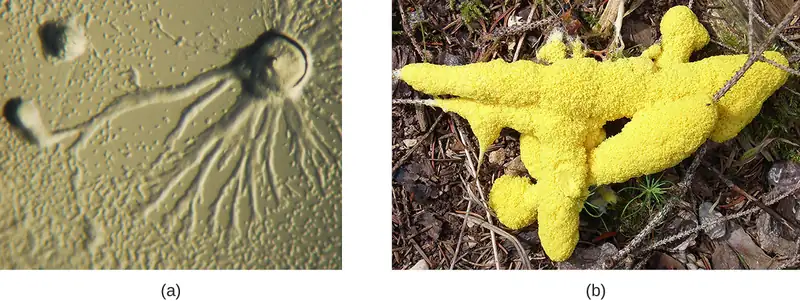
![A mature fruiting body produces a tall stalk with a sphere that generates spores via meiosis. The mature fruiting body releases spores. The haploid spores germinate and give rise to amoeba which divide to form more individual cells. Two amoeba fuse to form a zygote. The zygoe can grow and undergo meiosis and multiple rounds of mitosis. The new haploid amoeba are releases. Fertilization produces amoebas that aggregate into a structure called a slug. The slug migrates at a rate of 2 mm per hour. The migration stops the aggregate forms a fruiting body at the end of a stalk. This brings us back to the fruiting body in the life cycle.](img/osc-microbio-05-01-cellularlc.webp)
![A mature plasmodium (multinucleated free-flowing mass of protoplasm) can produce sclerotium (small cells) in a dry habitat. The mature plasmodium also produces diploid sporangia which produces haploid spores via meiosis. The mature sporangium releases mature spores which germinate. Germination gives rise to cells that can convert between ameboid and flagellated forms. Plasmogomy is the fusion of cytoplasm of two cells. Karyogamy is the fusion of nuclei and leads to the production of a diploid zygote. The zygote divides to form a multi-nucleated feeding plasmodium. This takes us back to the beginning of plasmodium stage of the life cycle.](img/osc-microbio-05-01-plasmodilc.webp)
Chromalveolata¶
The supergroup Chromalveolata is united by similar origins of its members’ plastids and includes the apicomplexans, ciliates, diatoms, and dinoflagellates, among other groups (we will cover the diatoms and dinoflagellates in Algae). The apicomplexans are intra- or extracellular parasites that have an apical complex at one end of the cell. The apical complex is a concentration of organelles, vacuoles, and microtubules that allows the parasite to enter host cells (Figure 5.12). Apicomplexans have complex life cycles that include an infective sporozoite that undergoes schizogony to make many merozoites (see the example in Figure 5.4). Many are capable of infecting a variety of animal cells, from insects to livestock to humans, and their life cycles often depend on transmission between multiple hosts. The genus Plasmodium is an example of this group.
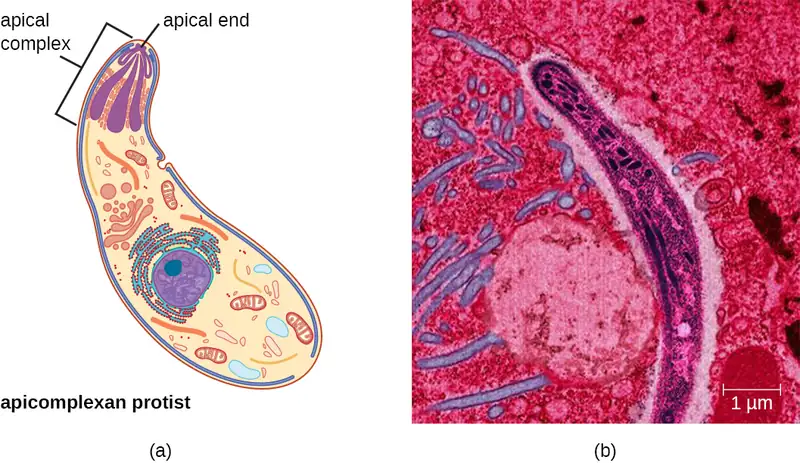
Other apicomplexans are also medically important. Cryptosporidium parvum causes intestinal symptoms and can cause epidemic diarrhea when the cysts contaminate drinking water. Theileria (Babesia) microti, transmitted by the tick Ixodes scapularis, causes recurring fever that can be fatal and is becoming a common transfusion-transmitted pathogen in the United States (Theileria and Babesia are closely related genera and there is some debate about the best classification). Finally, Toxoplasma gondii causes toxoplasmosis and can be transmitted from cat feces, unwashed fruit and vegetables, or from undercooked meat. Because toxoplasmosis can be associated with serious birth defects, pregnant people need to be aware of this risk and use caution if they are exposed to the feces of potentially infected cats. A national survey found the frequency of individuals with antibodies for toxoplasmosis (and thus who presumably have a current latent infection) in the United States to be 11%. Rates are much higher in other countries, including some developed countries.3 There is also evidence and a good deal of theorizing that the parasite may be responsible for altering infected humans’ behavior and personality traits.4
The ciliates (Ciliaphora), also within the Chromalveolata, are a large, very diverse group characterized by the presence of cilia on their cell surface. Although the cilia may be used for locomotion, they are often used for feeding, as well, and some forms are nonmotile. Balantidium coli (Figure 5.13) is the only parasitic ciliate that affects humans by causing intestinal illness, although it rarely causes serious medical issues except in the immunocompromised (those having a weakened immune system). Perhaps the most familiar ciliate is Paramecium, a motile organism with a clearly visible cytostome and cytoproct that is often studied in biology laboratories (Figure 5.14). Another ciliate, Stentor, is sessile and uses its cilia for feeding (Figure 5.15). Generally, these organisms have a micronucleus that is diploid, somatic, and used for sexual reproduction by conjugation. They also have a macronucleus that is derived from the micronucleus; the macronucleus becomes polyploid (multiple sets of duplicate chromosomes), and has a reduced set of metabolic genes.
Ciliates are able to reproduce through conjugation, in which two cells attach to each other. In each cell, the diploid micronuclei undergo meiosis, producing eight haploid nuclei each. Then, all but one of the haploid micronuclei and the macronucleus disintegrate; the remaining (haploid) micronucleus undergoes mitosis. The two cells then exchange one micronucleus each, which fuses with the remaining micronucleus present to form a new, genetically different, diploid micronucleus. The diploid micronucleus undergoes two mitotic divisions, so each cell has four micronuclei, and two of the four combine to form a new macronucleus. The chromosomes in the macronucleus then replicate repeatedly, the macronucleus reaches its polyploid state, and the two cells separate. The two cells are now genetically different from each other and from their previous versions.
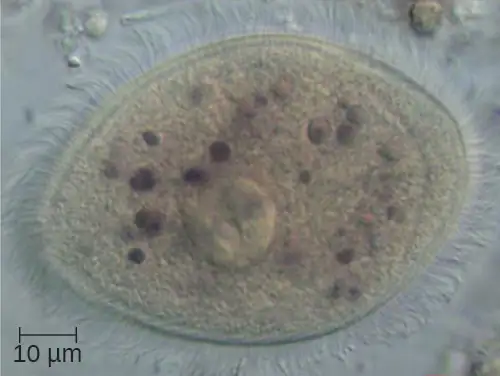
![Paramecium cell with short strands on the outside labeled cilia. An indent in the outer layer is labeled cytostome. The outside edge of the cytostome is an indent in the cell labeled oral groove. A sphere inside the cell at the base of the cytostome is labeled food vacuole, another nearby sphere is labeled cytoproct. A smaller opening in the cell is labeled anal pore. A star shaped structure inside the cell is labeled contractile vacuole. A large oval is labeled macronucluus and a smaller oval is labeled micronucleus.](img/osc-microbio-05-01-param.webp)
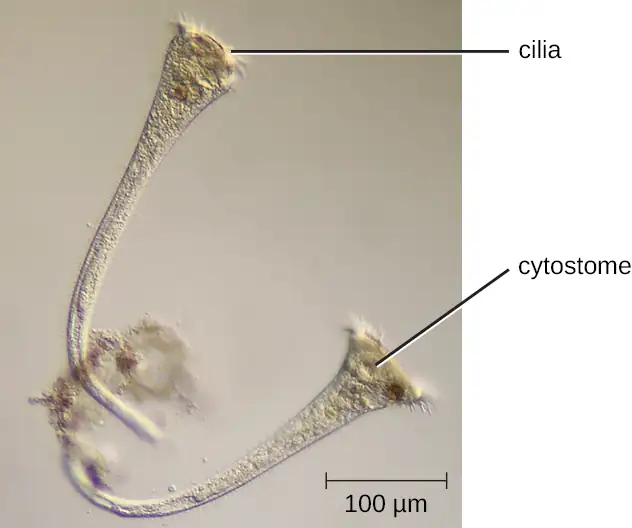
Öomycetes have similarities to fungi and were once classified with them. They are also called water molds. However, they differ from fungi in several important ways. Öomycetes have cell walls of cellulose (unlike the chitinous cell walls of fungi) and they are generally diploid, whereas the dominant life forms of fungi are typically haploid. Phytophthora, the plant pathogen found in the soil that caused the Irish potato famine, is classified within this group (Figure 5.16).
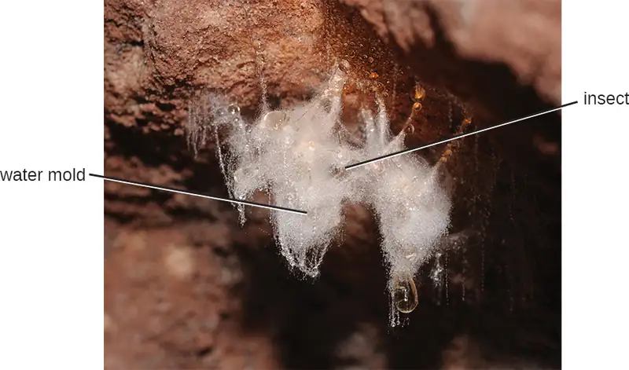
Link to Learning
Explore the procedures for detecting the presence of an apicomplexan in a public water supply, at this website.
This video shows the feeding of Stentor.
Excavata¶
The third and final supergroup to be considered in this section is the Excavata, which includes primitive eukaryotes and many parasites with limited metabolic abilities. These organisms have complex cell shapes and structures, often including a depression on the surface of the cell called an excavate. The group Excavata includes the subgroups Fornicata, Parabasalia, and Euglenozoa. The Fornicata lack mitochondria but have flagella. This group includes Giardia lamblia (also known as G. intestinalis or G. duodenalis), a widespread pathogen that causes diarrheal illness and can be spread through cysts from feces that contaminate water supplies (Figure 5.3). Parabasalia are frequent animal endosymbionts; they live in the guts of animals like termites and cockroaches. They have basal bodies and modified mitochondria (kinetoplastids). They also have a large, complex cell structure with an undulating membrane and often have many flagella. The trichomonads (a subgroup of the Parabasalia) include pathogens such as Trichomonas vaginalis, which causes the human sexually transmitted disease trichomoniasis. Trichomoniasis often does not cause symptoms in males, but they are able to transmit the infection. In females, it causes vaginal discomfort and discharge and may cause complications in pregnancy if left untreated.
The Euglenozoa are common in the environment and include photosynthetic and nonphotosynthetic species. Members of the genus Euglena are typically not pathogenic. Their cells have two flagella, a pellicle, a stigma (eyespot) to sense light, and chloroplasts for photosynthesis (Figure 5.17). The pellicle of Euglena is made of a series of protein bands surrounding the cell; it supports the cell membrane and gives the cell shape.
The Euglenozoa also include the trypanosomes, which are parasitic pathogens. The genus Trypanosoma includes T. brucei, which causes African trypanosomiasis (African sleeping sickness and T. cruzi, which causes American trypanosomiasis (Chagas disease). These tropical diseases are spread by insect bites. In African sleeping sickness, T. brucei colonizes the blood and the brain after being transmitted via the bite of a tsetse fly (Glossina spp.) (Figure 5.18). The early symptoms include confusion, difficulty sleeping, and lack of coordination. Left untreated, it is fatal.
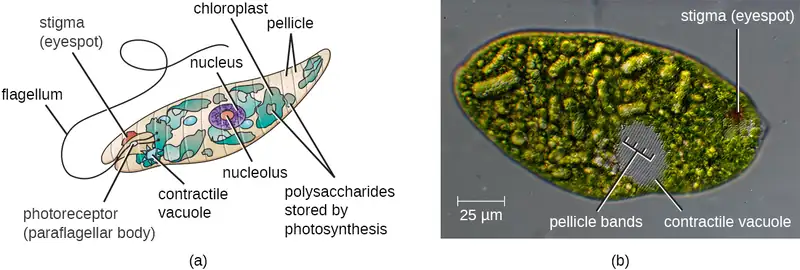
![The life cycle of Trypanosoma brucei takes place in both tsetse fly and humans. When the tsetse fly takes a blood meal it inject T. brucei into the bloodstream of a human. There the T. brucei multiplies by binary fission in blood, lymph, and spinal fluid. When another tsetse fly takes a blood meal it ingests T. brucei which multiplies by binary fission in the midgut of the fly. The T. brucei then transforms into an infectious stage which enters the salivary glands and multiplies. This can then be spread to another human.](img/osc-microbio-05-01-tryplife.webp)
Chagas’ disease originated and is most common in Latin America. The disease is transmitted by Triatoma spp., insects often called “kissing bugs,” and affects either the heart tissue or tissues of the digestive system. Untreated cases can eventually lead to heart failure or significant digestive or neurological disorders.
The genus Leishmania includes trypanosomes that cause disfiguring skin disease and sometimes systemic illness as well.
Eye on Ethics: Neglected Parasites
The Centers for Disease Control and Prevention (CDC) is responsible for identifying public health priorities in the United States and developing strategies to address areas of concern. As part of this mandate, the CDC has officially identified five parasitic diseases it considers to have been neglected (i.e., not adequately studied). These neglected parasitic infections (NPIs) include toxoplasmosis, Chagas disease, toxocariasis (a nematode infection transmitted primarily by infected dogs), cysticercosis (a disease caused by a tissue infection of the tapeworm Taenia solium), and trichomoniasis (a sexually transmitted disease caused by the parabasalid Trichomonas vaginalis).
The decision to name these specific diseases as NPIs means that the CDC will devote resources toward improving awareness and developing better diagnostic testing and treatment through studies of available data. The CDC may also advise on treatment of these diseases and assist in the distribution of medications that might otherwise be difficult to obtain.5
Of course, the CDC does not have unlimited resources, so by prioritizing these five diseases, it is effectively deprioritizing others. Given that many Americans have never heard of many of these NPIs, it is fair to ask what criteria the CDC used in prioritizing diseases. According to the CDC, the factors considered were the number of people infected, the severity of the illness, and whether the illness can be treated or prevented. Although several of these NPIs may seem to be more common outside the United States, the CDC argues that many cases in the United States likely go undiagnosed and untreated because so little is known about these diseases.6
What criteria should be considered when prioritizing diseases for purposes of funding or research? Are those identified by the CDC reasonable? What other factors could be considered? Should government agencies like the CDC have the same criteria as private pharmaceutical research labs? What are the ethical implications of deprioritizing other potentially neglected parasitic diseases such as leishmaniasis?
5.2 Parasitic Helminths¶
Learning Objectives
By the end of this section, you will be able to:
- Explain why we include the study of parasitic worms within the discipline of microbiology
- Compare the basic morphology of the major groups of parasitic helminthes
- Describe the characteristics of parasitic nematodes, and give an example of infective eggs and infective larvae
- Describe the characteristics of parasitic trematodes and cestodes, and give examples of each
- Identify examples of the primary causes of infections due to nematodes, trematodes, and cestodes
- Classify parasitic worms according to major groups
Parasitic helminths are animals that are often included within the study of microbiology because many species of these worms are identified by their microscopic eggs and larvae. There are two major groups of parasitic helminths: the roundworms (Nematoda) and flatworms (Platyhelminthes). Of the many species that exist in these groups, about half are parasitic and some are important human pathogens. As animals, they are multicellular and have organ systems. However, the parasitic species often have limited digestive tracts, nervous systems, and locomotor abilities. Parasitic forms may have complex reproductive cycles with several different life stages and more than one type of host. Some are monoecious, having both male and female reproductive organs in a single individual, while others are dioecious, each having either male or female reproductive organs.
Nematoda (Roundworms)¶
Phylum Nematoda (the roundworms) is a diverse group containing more than 15,000 species, of which several are important human parasites (Figure 5.19). These unsegmented worms have a full digestive system even when parasitic. Some are common intestinal parasites, and their eggs can sometimes be identified in feces or around the anus of infected individuals. Ascaris lumbricoides is the largest nematode intestinal parasite found in humans; females may reach lengths greater than 1 meter. A. lumbricoides is also very widespread, even in developed nations, although it is now a relatively uncommon problem in the United States. It may cause symptoms ranging from relatively mild (such as a cough and mild abdominal pain) to severe (such as intestinal blockage and impaired growth).
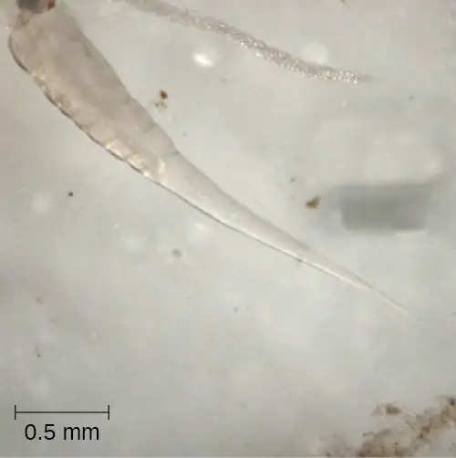
Of all nematode infections in the United States, pinworm (caused by Enterobius vermicularis) is the most common. Pinworm causes sleeplessness and itching around the anus, where the female worms lay their eggs during the night. Toxocara canis and T. cati are nematodes found in dogs and cats, respectively, that can be transmitted to humans, causing toxocariasis. Antibodies to these parasites have been found in approximately 13.9% of the U.S. population, suggesting that exposure is common.7 Infection can cause larval migrans, which can result in vision loss and eye inflammation, or fever, fatigue, coughing, and abdominal pain, depending on whether the organism infects the eye or the viscera. Another common nematode infection is hookworm, which is caused by Necator americanus (the New World or North American hookworm) and Ancylostoma duodenale (the Old World hookworm). Symptoms of hookworm infection can include abdominal pain, diarrhea, loss of appetite, weight loss, fatigue, and anemia.
Trichinellosis, also called trichinosis, caused by Trichinella spiralis, is contracted by consuming undercooked meat, which releases the larvae and allows them to encyst in muscles. Infection can cause fever, muscle pains, and digestive system problems; severe infections can lead to lack of coordination, breathing and heart problems, and even death. Finally, heartworm in dogs and other animals is caused by the nematode Dirofilaria immitis, which is transmitted by mosquitoes. Symptoms include fatigue and cough; when left untreated, death may result.
Clinical Focus: Part 2
The physician explains to Sarah’s mother that ringworm can be transferred between people through touch. “It’s common in school children, because they often come in close contact with each other, but anyone can become infected,” he adds. “Because you can transfer it through objects, locker rooms and public pools are also a potential source of infection. It’s very common among wrestlers and athletes in other contact sports.”
Looking very uncomfortable, Sarah says to her mother “I want this worm out of me.”
The doctor laughs and says, “Sarah, you’re in luck because ringworm is just a name; it is not an actual worm. You have nothing wriggling around under your skin.”
“Then what is it?” asks Sarah.
- What type of pathogen causes ringworm?
Jump to the next Clinical Focus box. Go back to the previous Clinical Focus box.
Check Your Understanding
- What is the most common nematode infection in the United States?
Platyhelminths (Flatworms)¶
Phylum Platyhelminthes (the platyhelminths) are flatworms. This group includes the flukes, tapeworms, and the turbellarians, which include planarians. The flukes and tapeworms are medically important parasites (Figure 5.20).
The flukes (trematodes) are nonsegmented flatworms that have an oral sucker (Figure 5.21) (and sometimes a second ventral sucker) and attach to the inner walls of intestines, lungs, large blood vessels, or the liver. Trematodes have complex life cycles, often with multiple hosts. Several important examples are the liver flukes (Clonorchis and Opisthorchis), the intestinal fluke (Fasciolopsis buski), and the oriental lung fluke (Paragonimus westermani). Schistosomiasis is a serious parasitic disease, considered second in the scale of its impact on human populations only to malaria. The parasites Schistosoma mansoni, S. haematobium, and S. japonicum, which are found in freshwater snails, are responsible for schistosomiasis (Figure 5.22). Immature forms burrow through the skin into the blood. They migrate to the lungs, then to the liver and, later, other organs. Symptoms include anemia, malnutrition, fever, abdominal pain, fluid buildup, and sometimes death.
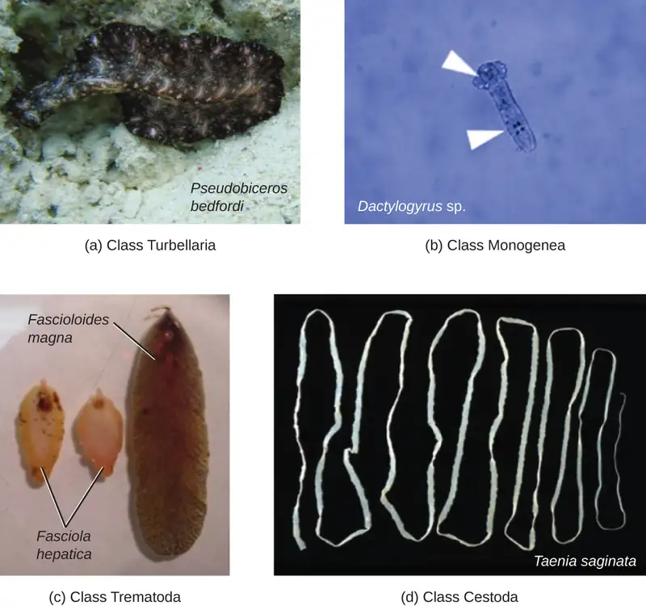
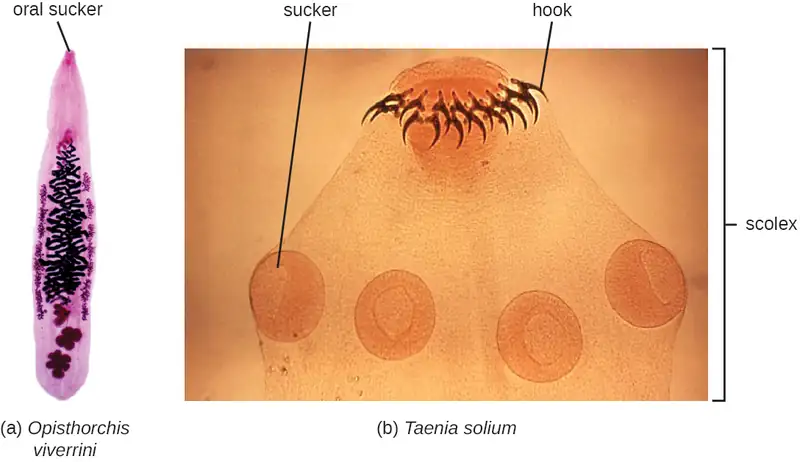
The other medically important group of platyhelminths are commonly known as tapeworms (cestodes) and are segmented flatworms that may have suckers or hooks at the scolex (head region) (Figure 5.21). Tapeworms use these suckers or hooks to attach to the wall of the small intestine. The body of the worm is made up of segments called proglottids that contain reproductive structures; these detach when the gametes are fertilized, releasing gravid proglottids with eggs. Tapeworms often have an intermediate host that consumes the eggs, which then hatch into a larval form called an oncosphere. The oncosphere migrates to a particular tissue or organ in the intermediate host, where it forms cysticerci. After being eaten by the definitive host, the cysticerci develop into adult tapeworms in the host's digestive system (Figure 5.23). Taenia saginata (the beef tapeworm) and T. solium (the pork tapeworm) enter humans through ingestion of undercooked, contaminated meat. The adult worms develop and reside in the intestine, but the larval stage may migrate and be found in other body locations such as skeletal and smooth muscle. The beef tapeworm is relatively benign, although it can cause digestive problems and, occasionally, allergic reactions. The pork tapeworm can cause more serious problems when the larvae leave the intestine and colonize other tissues, including those of the central nervous system. Diphylobothrium latum is the largest human tapeworm and can be ingested in undercooked fish. It can grow to a length of 15 meters. Echinococcus granulosus, the dog tapeworm, can parasitize humans and uses dogs as an important host.
![Schistoma mansoni, japonicum, and haematobium are found in feces; S. japonicum and S. haematobium are also found in urine. These can be diagnosed in the water and produce eggs which hatch releasing miracidia. The miracidia penetrate snail tissues and produce sporocysts in the snail (successive generations). The Cercariae released by snail into the water are free flowing and are the infective stage which can penetrate skin. S. mansoni travels to the large intestines, S. japonicum travels to the small intestines, and S. haemotobium travels to the rectum. The cercariae lose their tails during penetration and become schistosomalae. Theese enter circulation and migrate to portal blood in liver and mature into adults. The paired adulted worms migrate to the mesenteric venules of the bowels/rectum (laying egs that circulate to the liver and are shed in stools) – for S. mansoni and S. Japonicum. S. haematobium migrates to the venous plexus of the bladder.](img/osc-microbio-05-02-schistollc.webp)
![Eggs or gravid proplottidis from an infected individual are passed into the environment; this is the diagnostic stage. Cattle (T. saginata) and pigs (T. solium) become infected by ingesting vegetation contaminated by eggs or gravid proglottids. Oncospheres hatch, penetrating intestinal wall and circulate to musculature. The oncospheres develop into cysticerci in muscles and become infective. Humans are infected by ingesting raw or undercooked infected meat. The scolex attaches to intestine and adults are found in the small intestine.](img/osc-microbio-05-02-tapewormlc-58e4.webp)
Check Your Understanding
- What group of medically important flatworms is segmented and what group is unsegmented?
Micro Connections: Food for Worms?
For residents of temperate, developed countries, it may be difficult to imagine just how common helminth infections are in the human population. In fact, they are quite common and even occur frequently in the United States. Worldwide, approximately 807–1,221 million people are infected with Ascaris lumbricoides (perhaps one-sixth of the human population) and far more are infected if all nematode species are considered.8 Rates of infection are relatively high even in industrialized nations. Approximately 604–795 million people are infected with whipworm (Trichuris) worldwide (Trichuris can also infect dogs), and 576–740 million people are infected with hookworm (Necator americanus and Ancylostoma duodenale).9 Toxocara, a nematode parasite of dogs and cats, is also able to infect humans. It is widespread in the United States, with about 10,000 symptomatic cases annually. However, one study found 14% of the population (more than 40 million Americans) was seropositive, meaning they had been exposed to the parasite at one time. More than 200 million people have schistosomiasis worldwide. Most of the World Health Organization (WHO) neglected tropical diseases are helminths. In some cases, helminths may cause subclinical illnesses, meaning the symptoms are so mild that that they go unnoticed. In other cases, the effects may be more severe or chronic, leading to fluid accumulation and organ damage. With so many people affected, these parasites constitute a major global public health concern.
Micro Connections: Eradicating the Guinea Worm
Dracunculiasis, or Guinea worm disease, is caused by a nematode called Dracunculus medinensis. When people consume contaminated water, water fleas (small crustaceans) containing the nematode larvae may be ingested. These larvae migrate out of the intestine, mate, and move through the body until females eventually emerge (generally through the feet). While Guinea worm disease is rarely fatal, it is extremely painful and can be accompanied by secondary infections and edema (Figure 5.24).
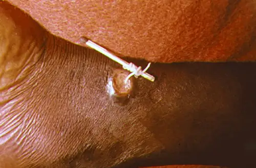
An eradication campaign led by WHO, the CDC, the United Nations Children’s Fund (UNICEF), and the Carter Center (founded by former U.S. president Jimmy Carter) has been extremely successful in reducing cases of dracunculiasis. This has been possible because diagnosis is straightforward, there is an inexpensive method of control, there is no animal reservoir, the water fleas are not airborne (they are restricted to still water), the disease is geographically limited, and there has been a commitment from the governments involved. Additionally, no vaccines or medication are required for treatment and prevention. In 1986, 3.5 million people were estimated to be affected. After the eradication campaign, which included helping people in affected areas learn to filter water with cloth, only four countries continue to report the disease (Chad, Mali, South Sudan, and Ethiopia) with a total of 126 cases reported to WHO in 2014.10
5.3 Fungi¶
Learning Objectives
By the end of this section, you will be able to:
- Explain why the study of fungi such as yeast and molds is within the discipline of microbiology
- Describe the unique characteristics of fungi
- Describe examples of asexual and sexual reproduction of fungi
- Compare the major groups of fungi in this chapter, and give examples of each
- Identify examples of the primary causes of infections due to yeasts and molds
- Identify examples of toxin-producing fungi
- Classify fungal organisms according to major groups
The fungi comprise a diverse group of organisms that are heterotrophic and typically saprozoic. In addition to the well-known macroscopic fungi (such as mushrooms and molds), many unicellular yeasts and spores of macroscopic fungi are microscopic. For this reason, fungi are included within the field of microbiology.
Fungi are important to humans in a variety of ways. Both microscopic and macroscopic fungi have medical relevance, with some pathogenic species that can cause mycoses (illnesses caused by fungi). Some pathogenic fungi are opportunistic, meaning that they mainly cause infections when the host’s immune defenses are compromised and do not normally cause illness in healthy individuals. Fungi are important in other ways. They act as decomposers in the environment, and they are critical for the production of certain foods such as cheeses. Fungi are also major sources of antibiotics, such as penicillin from the fungus Penicillium.
Characteristics of Fungi¶
Fungi have well-defined characteristics that set them apart from other organisms. Most multicellular fungal bodies, commonly called molds, are made up of filaments called hyphae. Hyphae can form a tangled network called a mycelium and form the thallus (body) of fleshy fungi. Hyphae that have walls between the cells are called septate hyphae; hyphae that lack walls and cell membranes between the cells are called nonseptate or coenocytic hyphae). (Figure 5.25).
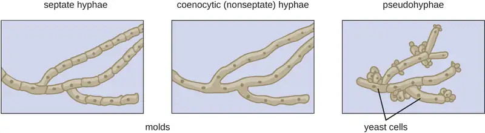
In contrast to molds, yeasts are unicellular fungi. The budding yeasts reproduce asexually by budding off a smaller daughter cell; the resulting cells may sometimes stick together as a short chain or pseudohypha (Figure 5.25).
Some fungi are dimorphic, having more than one appearance during their life cycle. These dimorphic fungi may be able to appear as yeasts or molds, which can be important for infectivity. They are capable of changing their appearance in response to environmental changes such as nutrient availability or fluctuations in temperature, growing as a mold, for example, at 25 °C (77 °F), and as yeast cells at 37 °C (98.6 °F). This ability helps dimorphic fungi to survive in diverse environments. Two examples of dimorphic yeasts are the human pathogens Histoplasma capsulatum and Candida albicans. H. capsulatum causes the lung disease histoplasmosis, and C. albicans is associated with vaginal yeast infections, oral thrush, and candidiasis of the skin (Figure 5.26).
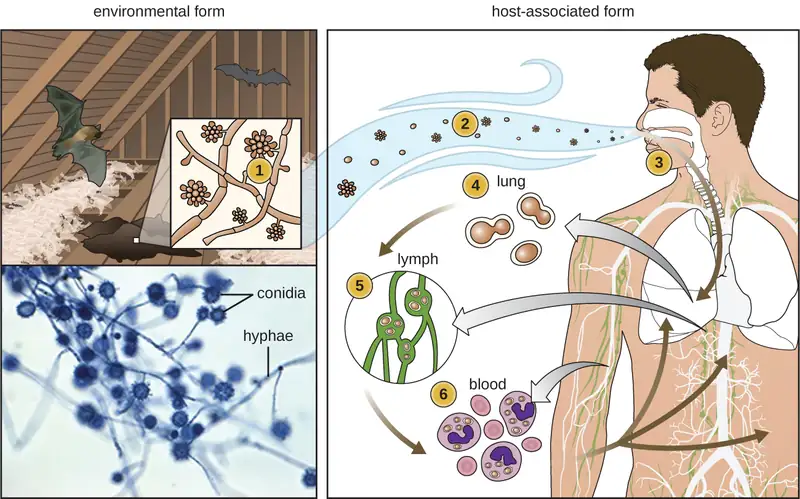
There are notable unique features in fungal cell walls and membranes. Fungal cell walls contain chitin, as opposed to the cellulose found in the cell walls of plants and many protists. Additionally, whereas animals have cholesterol in their cell membranes, fungal cell membranes have different sterols called ergosterols. Ergosterols are often exploited as targets for antifungal drugs.
Fungal life cycles are unique and complex. Fungi reproduce sexually either through cross- or self-fertilization. Haploid fungi form hyphae that have gametes at the tips. Two different mating types (represented as “+ type” and “– type”) are involved. The cytoplasms of the + and – type gametes fuse (in an event called plasmogamy), producing a cell with two distinct nuclei (a dikaryotic cell). Later, the nuclei fuse (in an event called karyogamy) to create a diploid zygote. The zygote undergoes meiosis to form spores that germinate to start the haploid stage, which eventually creates more haploid mycelia (Figure 5.27). Depending on the taxonomic group, these sexually produced spores are known as zygospores (in Zygomycota), ascospores (in Ascomycota), or basidiospores (in Basidiomycota) (Figure 5.28).
Fungi may also exhibit asexual reproduction by mitosis, mitosis with budding, fragmentation of hyphae, and formation of asexual spores by mitosis. These spores are specialized cells that, depending on the organism, may have unique characteristics for survival, reproduction, and dispersal. Fungi exhibit several types of asexual spores and these can be important in classification.
![Zygomycete life cycle. The mycelia can undergo asexual reproduction by forming spores via mitosis. The spores then form mycelia by germination. The haploid spores can also undergo sexual reproduction. The first step is germination when mycelia form. If the two mating types (+ and -) are in close proximity, extensions called gametangia form between them. Next is plasmogamy. This is the fusion between the + and – mating types resulting in a zygosporangium with multiple haploid nucei. The zygosporangiom forms a thick, protective coat. Next the nuclei fuse to form a zygote with multiple diploid nuclei in karyogamy. This forms a diploid zygote. Next is mitosis and germination where the sporangium grows on a short stalk and the haploid spores are formed inside. The spores are released in germination and we are back to the spore stage of the life cycle.](img/osc-microbio-05-03-zygo.webp)
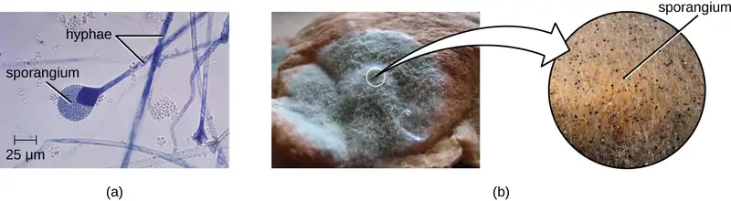
Check Your Understanding
- Is a dimorphic fungus a yeast or a mold? Explain.
Fungal Diversity¶
The fungi are very diverse, comprising seven major groups. Not all of the seven groups contain pathogens. Some of these groups are generally associated with plants and include plant pathogens. For example, Urediniomycetes and Ustilagomycetes include the plant rusts and smuts, respectively. These form reddish or dark masses, respectively, on plants as rusts (red) or smuts (dark). Some species have substantial economic impact because of their ability to reduce crop yields. Glomeromycota includes the mycorrhizal fungi, important symbionts with plant roots that can promote plant growth by acting like an extended root system. The Glomeromycota are obligate symbionts, meaning that they can only survive when associated with plant roots; the fungi receive carbohydrates from the plant and the plant benefits from the increased ability to take up nutrients and minerals from the soil. The Chytridiomycetes (chytrids) are small fungi, but are extremely ecologically important. Chytrids are generally aquatic and have flagellated, motile gametes; specific types are implicated in amphibian declines around the world. Because of their medical importance, we will focus on Zygomycota, Ascomycota, Basidiomycota, and Microsporidia. Figure 5.33 summarizes the characteristics of these medically important groups of fungi.
The Zygomycota (zygomycetes) are mainly saprophytes with coenocytic hyphae and haploid nuclei. They use sporangiospores for asexual reproduction. The group name comes from the zygospores that they use for sexual reproduction (Figure 5.27), which have hard walls formed from the fusion of reproductive cells from two individuals. Zygomycetes are important for food science and as crop pathogens. One example is Rhizopus stolonifer (Figure 5.28), an important bread mold that also causes rice seedling blight. Mucor is a genus of fungi that can potentially cause necrotizing infections in humans, although most species are intolerant of temperatures found in mammalian bodies (Figure 5.28).
The Ascomycota include fungi that are used as food (edible mushrooms, morels, and truffles), others that are common causes of food spoilage (bread molds and plant pathogens), and still others that are human pathogens. Ascomycota may have septate hyphae and cup-shaped fruiting bodies called ascocarps. Some genera of Ascomycota use sexually produced ascospores as well as asexual spores called conidia, but sexual phases have not been discovered or described for others. Some produce an ascus containing ascospores within an ascocarp (Figure 5.29).
Examples of the Ascomycota include several bread molds and minor pathogens, as well as species capable of causing more serious mycoses. Species in the genus Aspergillus are important causes of allergy and infection, and are useful in research and in the production of certain fermented alcoholic beverages such as Japanese sake. The fungus Aspergillus flavus, a contaminant of nuts and stored grains, produces an aflatoxin that is both a toxin and the most potent known natural carcinogen. Neurospora crassa is of particular use in genetics research because the spores produced by meiosis are kept inside the ascus in a row that reflects the cell divisions that produced them, giving a direct view of segregation and assortment of genes (Figure 5.30). Penicillium produces the antibiotic penicillin (Figure 5.29).
Many species of ascomycetes are medically important. A large number of species in the genera Trichophyton, Microsporum, and Epidermophyton are dermatophytes, pathogenic fungi capable of causing skin infections such as athlete’s foot, jock itch, and ringworm. Blastomyces dermatitidis is a dimorphic fungus that can cause blastomycosis, a respiratory infection that, if left untreated, can become disseminated to other body sites, sometimes leading to death. Another important respiratory pathogen is the dimorphic fungus Histoplasma capsulatum (Figure 5.26), which is associated with birds and bats in the Ohio and Mississippi river valleys. Coccidioides immitis causes the serious lung disease Valley fever. Candida albicans, the most common cause of vaginal and other yeast infections, is also an ascomycete fungus; it is a part of the normal microbiota of the skin, intestine, genital tract, and ear (Figure 5.29). Ascomycetes also cause plant diseases, including ergot infections, Dutch elm disease, and powdery mildews.
Saccharomyces yeasts, including the baker’s yeast S. cerevisiae, are unicellular ascomycetes with haploid and diploid stages (Figure 5.31). This and other Saccharomyces species are used for brewing beer.
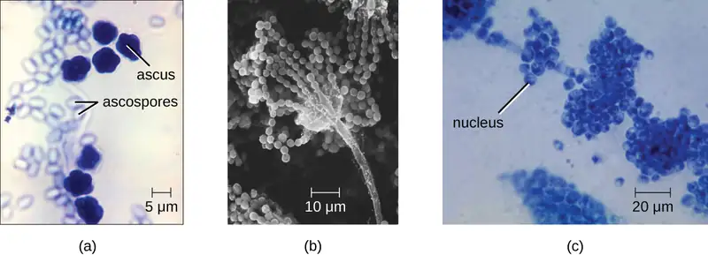
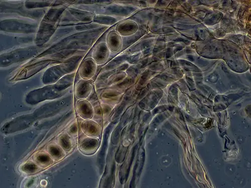
![Ascomycete life cycle. Mycelia produce conidiophores which use mitosis to asexually produce spores. These spores then germinate into new mycelia. Sexual reproduction begins one hyphae produces an ascogonium and another produces an antheridium. In plasmogamy the ascogonium and antheridium fuse. Mitosis and cell division result in the formation of many dikaryotic hyphae, which form a fruiting body called the ascocarp. Asci form at the tips of these hyphae. In karyogamy the nuclein in the asci fuse to form a diploid zygote. Then meiosis produces four haploid nuclei in the ascus. Then mitosis and cell division results in eight haploid ascospores in the ascus. These ascospores then disperse and germinate into new mycelia.](img/osc-microbio-05-03-ascomylc.webp)
The Basidiomycota (basidiomycetes) are fungi that have basidia (club-shaped structures) that produce basidiospores (spores produced through budding) within fruiting bodies called basidiocarps (Figure 5.32). They are important as decomposers and as food. This group includes rusts, stinkhorns, puffballs, and mushrooms. Several species are of particular importance. Cryptococcus neoformans, a fungus commonly found as a yeast in the environment, can cause serious lung infections when inhaled by individuals with weakened immune systems. The edible meadow mushroom, Agricus campestris, is a basidiomycete, as is the poisonous mushroom Amanita phalloides, known as the death cap. The deadly toxins produced by A. phalloides have been used to study transcription.
![Basidiomycete life cycle. Haploid basidiospres germinate to form mycelia. There are two mating types (+ and - ). In plasmogamy, fusion between + and – mating types results in formation of a dikaryotic mycelium. Under the right environmental conditions, a basidiocarp forms via mitosis. Gills of the basidiocarp contain cells called basidia. A photo of a mushroom labels the mushroom as basidiocap and basidia within the gills. Basidia form diploid nuclei via karyotamy; this produces a diploid zygote. Four haploid nuclei are formed in the basidium via meisos. Cell division produces four haploid basidiospores. These spres then disperse and germinate into new mycelia.](img/osc-microbio-05-03-basidiolc.webp)
Finally, the Microsporidia are unicellular fungi that are obligate intracellular parasites. They lack mitochondria, peroxisomes, and centrioles, but their spores release a unique polar tubule that pierces the host cell membrane to allow the fungus to gain entry into the cell. A number of microsporidia are human pathogens, and infections with microsporidia are called microsporidiosis. One pathogenic species is Enterocystozoan bieneusi, which can cause symptoms such as diarrhea, cholecystitis (inflammation of the gall bladder), and in rare cases, respiratory illness.
![A table labeled select groups of fungi. Four groups are discussed. Ascomycota have the characteristics: septate hyphae, ascus with ascospores in ascocarp, and conidiospores. Examples include Cup fungi, edible mushrooms, morels, truffles, neurospora, and penicillim. Medically important species include Aspergillus, Trichophyton, Microsporum, Epidemophyton, Blastomyces demititidis, and Histoplasma capsulatum. An image of Aspergillus niger shows long strands with a dark sphere at the end of one strand. Basidiomycota have the characteristics: basidia, produce basidiospores in basidiocarp. Examples include club fungi, rusts, stinkhors, puffballs, mushrooms, Cryptococcus neoformans, Amanita phalloides. Medically important species include Cryptococcus neoformans. An image shows a mushroom labeled Amanita phalloides. Microsporidia have the characteristics: lack mitochondria, peroxisomes, and centrioles; spores produce a polar tube. Examples include Enterocystozoan bieneusi which is medically important. A micrograph shows oval cells labeled microsporidia (unidentified). Zygomycota have the characteristics: mainly saprophytes, coenocytic hyphae, haploid nuclei and zygospores. Examples include Rhizopus stolonifera and the medically important mucor spp. A micrograph shows a long strand with many small dots everywhere on the slide.](img/osc-microbio-05-03-taxatable.webp)
Check Your Understanding
- Which group of fungi appears to be associated with the greatest number of human diseases?
Micro Connections: Eukaryotic Pathogens in Eukaryotic Hosts
When we think about antimicrobial medications, antibiotics such as penicillin often come to mind. Penicillin and related antibiotics interfere with the synthesis of peptidoglycan cell walls, which effectively targets bacterial cells. These antibiotics are useful because humans (like all eukaryotes) do not have peptidoglycan cell walls.
Developing medications that are effective against eukaryotic cells but not harmful to human cells is more difficult. Despite huge morphological differences, the cells of humans, fungi, and protists are similar in terms of their ribosomes, cytoskeletons, and cell membranes. As a result, it is more challenging to develop medications that target protozoans and fungi in the same way that antibiotics target prokaryotes.
Fungicides have relatively limited modes of action. Because fungi have ergosterols (instead of cholesterol) in their cell membranes, the different enzymes involved in sterol production can be a target of some medications. The azole and morpholine fungicides interfere with the synthesis of membrane sterols. These are used widely in agriculture (fenpropimorph) and clinically (e.g., miconazole). Some antifungal medications target the chitin cell walls of fungi. Despite the success of these compounds in targeting fungi, antifungal medications for systemic infections still tend to have more toxic side effects than antibiotics for bacteria.
Clinical Focus: Part 3
Sarah is relieved the ringworm is not an actual worm, but wants to know what it really is. The physician explains that ringworm is a fungus. He tells her that she will not see mushrooms popping out of her skin, because this fungus is more like the invisible part of a mushroom that hides in the soil. He reassures her that they are going to get the fungus out of her too.
The doctor cleans and then carefully scrapes the lesion to place a specimen on a slide. By looking at it under a microscope, the physician is able to confirm that a fungal infection is responsible for Sarah’s lesion. In Figure 5.34, it is possible to see macro- and microconidia in Trichophyton rubrum. Cell walls are also visible. Even if the pathogen resembled a helminth under the microscope, the presence of cell walls would rule out the possibility because animal cells lack cell walls.
The doctor prescribes an antifungal cream for Sarah’s mother to apply to the ringworm. Sarah’s mother asks, “What should we do if it doesn’t go away?”
- Can all forms of ringworm be treated with the same antifungal medication?
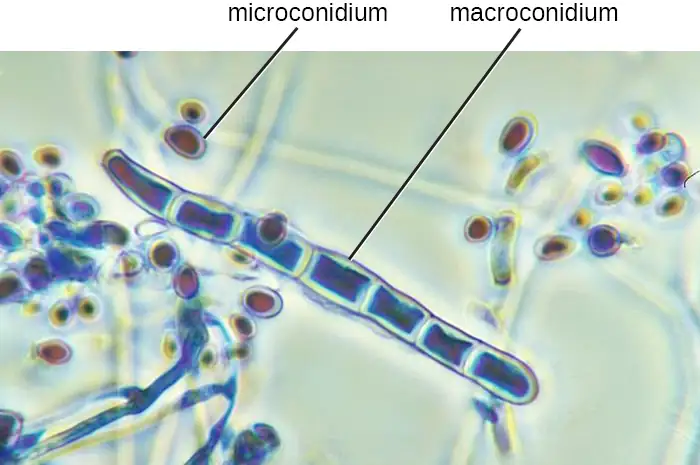
Jump to the next Clinical Focus box. Go back to the previous Clinical Focus box.
5.4 Algae¶
Learning Objectives
By the end of this section, you will be able to:
- Explain why algae are included within the discipline of microbiology
- Describe the unique characteristics of algae
- Identify examples of toxin-producing algae
- Compare the major groups of algae in this chapter, and give examples of each
- Classify algal organisms according to major groups
The algae are autotrophic protists that can be unicellular or multicellular. These organisms are found in the supergroups Chromalveolata (dinoflagellates, diatoms, golden algae, and brown algae) and Archaeplastida (red algae and green algae). They are important ecologically and environmentally because they are responsible for the production of approximately 70% of the oxygen and organic matter in aquatic environments. Some types of algae, even those that are microscopic, are regularly eaten by humans and other animals. Additionally, algae are the source for agar, agarose, and carrageenan, solidifying agents used in laboratories and in food production. Although algae are typically not pathogenic, some produce toxins. Harmful algal blooms, which occur when algae grow quickly and produce dense populations, can produce high concentrations of toxins that impair liver and nervous-system function in aquatic animals and humans.
Like protozoans, algae often have complex cell structures. For instance, algal cells can have one or more chloroplasts that contain structures called pyrenoids to synthesize and store starch. The chloroplasts themselves differ in their number of membranes, indicative of secondary or rare tertiary endosymbiotic events. Primary chloroplasts have two membranes—one from the original cyanobacteria that the ancestral eukaryotic cell engulfed, and one from the plasma membrane of the engulfing cell. Chloroplasts in some lineages appear to have resulted from secondary endosymbiosis, in which another cell engulfed a green or red algal cell that already had a primary chloroplast within it. The engulfing cell destroyed everything except the chloroplast and possibly the cell membrane of its original cell, leaving three or four membranes around the chloroplast. Different algal groups have different pigments, which are reflected in common names such as red algae, brown algae, and green algae.
Some algae, the seaweeds, are macroscopic and may be confused with plants. Seaweeds can be red, brown, or green, depending on their photosynthetic pigments. Green algae, in particular, share some important similarities with land plants; however, there are also important distinctions. For example, seaweeds do not have true tissues or organs like plants do. Additionally, seaweeds do not have a waxy cuticle to prevent desiccation. Algae can also be confused with cyanobacteria, photosynthetic bacteria that bear a resemblance to algae; however, cyanobacteria are prokaryotes (see Nonproteobacteria Gram-negative Bacteria and Phototrophic Bacteria).
Algae have a variety of life cycles. Reproduction may be asexual by mitosis or sexual using gametes.
Algal Diversity¶
Although the algae and protozoa were formerly separated taxonomically, they are now mixed into supergroups. The algae are classified within the Chromalveolata and the Archaeplastida. Although the Euglenozoa (within the supergroup Excavata) include photosynthetic organisms, these are not considered algae because they feed and are motile.
The dinoflagellates and stramenopiles fall within the Chromalveolata. The dinoflagellates are mostly marine organisms and are an important component of plankton. They have a variety of nutritional types and may be phototrophic, heterotrophic, or mixotrophic. Those that are photosynthetic use chlorophyll a, chlorophyll c2, and other photosynthetic pigments (Figure 5.35). They generally have two flagella, causing them to whirl (in fact, the name dinoflagellate comes from the Greek word for “whirl”: dini). Some have cellulose plates forming a hard outer covering, or theca, as armor. Additionally, some dinoflagellates produce neurotoxins that can cause paralysis in humans or fish. Exposure can occur through contact with water containing the dinoflagellate toxins or by feeding on organisms that have eaten dinoflagellates.
When a population of dinoflagellates becomes particularly dense, a red tide (a type of harmful algal bloom) can occur. Red tides cause harm to marine life and to humans who consume contaminated marine life. Major toxin producers include Gonyaulax and Alexandrium, both of which cause paralytic shellfish poisoning. Another species, Pfiesteria piscicida, is known as a fish killer because, at certain parts of its life cycle, it can produce toxins harmful to fish and it appears to be responsible for a suite of symptoms, including memory loss and confusion, in humans exposed to water containing the species.
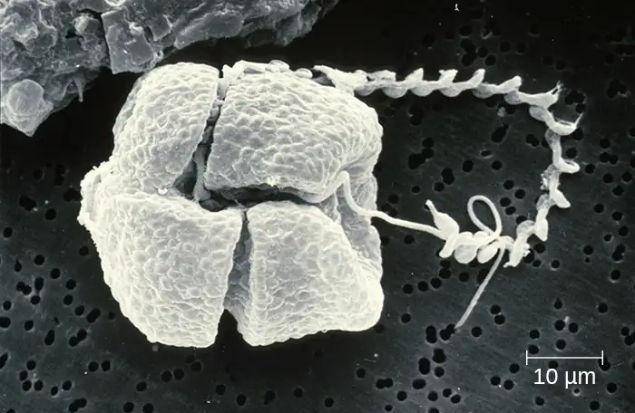
The stramenopiles include the golden algae (Chrysophyta), the brown algae (Phaeophyta), and the diatoms (Bacillariophyta). Stramenopiles have chlorophyll a, chlorophyll c1/c2, and fucoxanthin as photosynthetic pigments. Their storage carbohydrate is chrysolaminarin. While some lack cell walls, others have scales. Diatoms have frustules, which are outer cell walls of crystallized silica; their fossilized remains are used to produce diatomaceous earth, which has a range of uses such as filtration and insulation. Additionally, diatoms can reproduce sexually and asexually, and the male gametes of centric diatoms have flagella providing directed movement to seek female gametes for sexual reproduction.
Brown algae (Phaeophyta) are multicellular marine seaweeds. Some can be extremely large, such as the giant kelp (Laminaria). They have leaf-like blades, stalks, and structures called holdfasts that are used to attach to substrate. However, these are not true leaves, stems, or roots (Figure 5.36). Their photosynthetic pigments are chlorophyll a, chlorophyll c, β-carotene, and fucoxanthine. They use laminarin as a storage carbohydrate.
The Archaeplastids include the green algae (Chlorophyta), the red algae (Rhodophyta), another group of green algae (Charophyta), and the land plants. The Charaphyta are the most similar to land plants because they share a mechanism of cell division and an important biochemical pathway, among other traits that the other groups do not have. Like land plants, the Charophyta and Chlorophyta have chlorophyll a and chlorophyll b as photosynthetic pigments, cellulose cell walls, and starch as a carbohydrate storage molecule. Chlamydomonas is a green alga that has a single large chloroplast, two flagella, and a stigma (eyespot); it is important in molecular biology research (Figure 5.37).
Chlorella is a nonmotile, large, unicellular alga, and Acetabularia is an even larger unicellular green alga. The size of these organisms challenges the idea that all cells are small, and they have been used in genetics research since Joachim Hämmerling (1901–1980) began to work with them in 1943. Volvox is a colonial, unicellular alga (Figure 5.37). A larger, multicellular green alga is Ulva, also known as the sea lettuce because of its large, edible, green blades. The range of life forms within the Chlorophyta—from unicellular to various levels of coloniality to multicellular forms—has been a useful research model for understanding the evolution of multicellularity. The red algae are mainly multicellular but include some unicellular forms. They have rigid cell walls containing agar or carrageenan, which are useful as food solidifying agents and as a solidifier added to growth media for microbes.
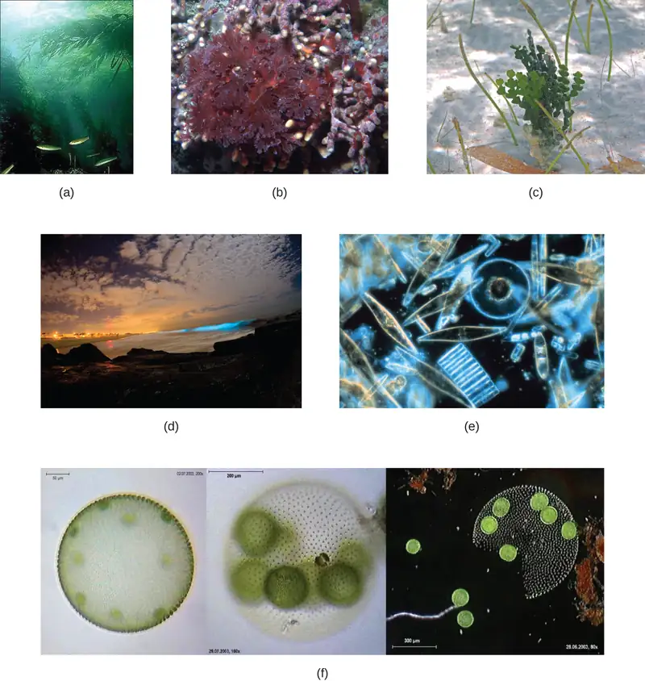
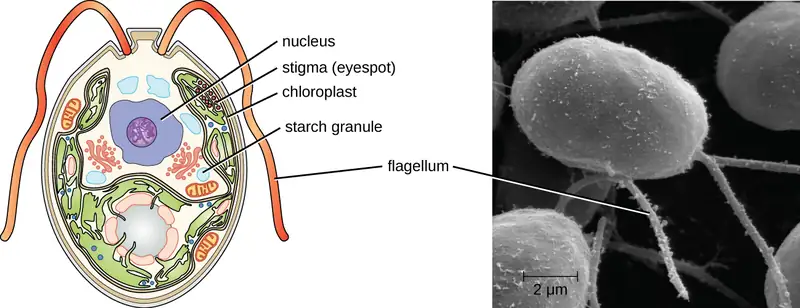
Check Your Understanding
- Which groups of algae are associated with harmful algal blooms?
5.5 Lichens¶
Learning Objectives
By the end of this section, you will be able to:
- Explain why lichens are included in the study of microbiology
- Describe the unique characteristics of a lichen and the role of each partner in the symbiotic relationship of a lichen
- Describe ways in which lichens are beneficial to the environment
No one has to worry about getting sick from a lichen infection, but lichens are interesting from a microbiological perspective and they are an important component of most terrestrial ecosystems. Lichens provide opportunities for study of close relationships between unrelated microorganisms. Lichens contribute to soil production by breaking down rock, and they are early colonizers in soilless environments such as lava flows. The cyanobacteria in some lichens can fix nitrogen and act as a nitrogen source in some environments. Lichens are also important soil stabilizers in some desert environments and they are an important winter food source for caribou. Finally, lichens produce compounds that have antibacterial effects, and further research may discover compounds that are medically useful to humans.
Characteristics¶
A lichen is a combination of two organisms, a green alga or cyanobacterium and fungus, living in a symbiotic relationship. Whereas algae normally grow only in aquatic or extremely moist environments, lichens can potentially be found on almost any surface (especially rocks) or as epiphytes (meaning that they grow on other plants).
In some ways, the symbiotic relationship between fungi and algae seems like a mutualism (a relationship in which both organisms benefit). The fungus can obtain photosynthates from the algae or cyanobacterium and the algae or cyanobacterium can grow in a drier environment than it could otherwise tolerate. However, most scientists consider this symbiotic relationship to be a controlled parasitism (a relationship in which one organism benefits and the other is harmed) because the photosynthetic organism grows less well than it would without the fungus. It is important to note that such symbiotic interactions fall along a continuum between conflict and cooperation.
Lichens are slow growing and can live for centuries. They have been used in foods and to extract chemicals as dyes or antimicrobial substances. Some are very sensitive to pollution and have been used as environmental indicators.
Lichens have a body called a thallus, an outer, tightly packed fungal layer called a cortex, and an inner, loosely packed fungal layer called a medulla (Figure 5.38). Lichens use hyphal bundles called rhizines to attach to the substrate.
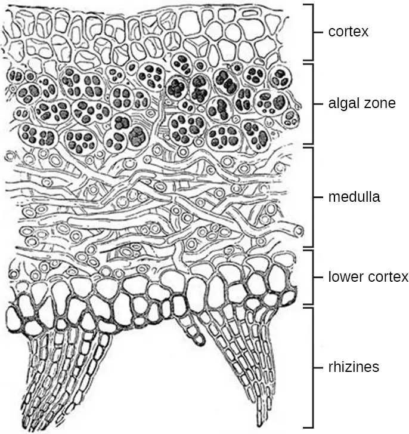
Lichen Diversity¶
Lichens are classified as fungi and the fungal partners belong to the Ascomycota and Basidiomycota. Lichens can also be grouped into types based on their morphology. There are three major types of lichens, although other types exist as well. Lichens that are tightly attached to the substrate, giving them a crusty appearance, are called crustose lichens. Those that have leaf-like lobes are foliose lichens; they may only be attached at one point in the growth form, and they also have a second cortex below the medulla. Finally, fruticose lichens have rounded structures and an overall branched appearance. Figure 5.39 shows an example of each of the forms of lichens.
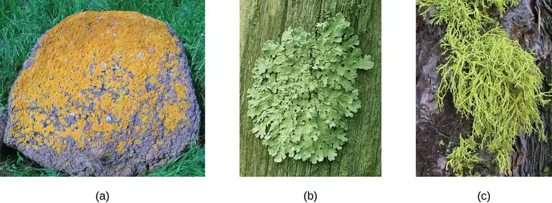
Check Your Understanding
- What types of organisms are found in lichens?
- What are the three growth forms of lichens?
Clinical Focus: Resolution
Sarah’s mother asks the doctor what she should do if the cream prescribed for Sarah’s ringworm does not work. The doctor explains that ringworm is a general term for a condition caused by multiple species. The first step is to take a scraping for examination under the microscope, which the doctor has already done. He explains that he has identified the infection as a fungus, and that the antifungal cream works against the most common fungi associated with ringworm. However, the cream may not work against some species of fungus. If the cream is not working after a couple of weeks, Sarah should come in for another visit, at which time the doctor will take steps to identify the species of the fungus.
Positive identification of dermatophytes requires culturing. For this purpose, Sabouraud’s agar may be used. In the case of Sarah’s infection, which cleared up within 2 weeks of treatment, the culture would have a granular texture and would appear pale pink on top and red underneath. These features suggest that the fungus is Trichophyton rubrum, a common cause of ringworm.
Go back to the previous Clinical Focus box.
Chapter Review¶
Key Concepts and Summary¶
5.1 Unicellular Eukaryotic Parasites¶
- Protists are a diverse, polyphyletic group of eukaryotic organisms.
- Protists may be unicellular or multicellular. They vary in how they get their nutrition, morphology, method of locomotion, and mode of reproduction.
- Important structures of protists include contractile vacuoles, cilia, flagella, pellicles, and pseudopodia; some lack organelles such as mitochondria.
- Taxonomy of protists is changing rapidly as relationships are reassessed using newer techniques.
- The protists include important pathogens and parasites.
5.2 Parasitic Helminths¶
- Helminth parasites are included within the study of microbiology because they are often identified by looking for microscopic eggs and larvae.
- The two major groups of helminth parasites are the roundworms (Nematoda) and the flatworms (Platyhelminthes).
- Nematodes are common intestinal parasites often transmitted through undercooked foods, although they are also found in other environments.
- Platyhelminths include tapeworms and flukes, which are often transmitted through undercooked meat.
5.3 Fungi¶
- The fungi include diverse saprotrophic eukaryotic organisms with chitin cell walls
- Fungi can be unicellular or multicellular; some (like yeast) and fungal spores are microscopic, whereas some are large and conspicuous
- Reproductive types are important in distinguishing fungal groups
- Medically important species exist in the four fungal groups Zygomycota, Ascomycota, Basidiomycota, and Microsporidia
- Members of Zygomycota, Ascomycota, and Basidiomycota produce deadly toxins
- Important differences in fungal cells, such as ergosterols in fungal membranes, can be targets for antifungal medications, but similarities between human and fungal cells make it difficult to find targets for medications and these medications often have toxic adverse effects
5.4 Algae¶
- Algae are a diverse group of photosynthetic eukaryotic protists
- Algae may be unicellular or multicellular
- Large, multicellular algae are called seaweeds but are not plants and lack plant-like tissues and organs
- Although algae have little pathogenicity, they may be associated with toxic algal blooms that can and aquatic wildlife and contaminate seafood with toxins that cause paralysis
- Algae are important for producing agar, which is used as a solidifying agent in microbiological media, and carrageenan, which is used as a solidifying agent
5.5 Lichens¶
- Lichens are a symbiotic association between a fungus and an algae or a cyanobacterium
- The symbiotic association found in lichens is currently considered to be a controlled parasitism, in which the fungus benefits and the algae or cyanobacterium is harmed
- Lichens are slow growing and can live for centuries in a variety of habitats
- Lichens are environmentally important, helping to create soil, providing food, and acting as indicators of air pollution
Multiple Choice¶
5.1 Unicellular Eukaryotic Parasites¶
1. Which genus includes the causative agent for malaria?
- Euglena
- Paramecium
- Plasmodium
- Trypanosoma
Answer
C
2. Which protist is a concern because of its ability to contaminate water supplies and cause diarrheal illness?
- Plasmodium vivax
- Toxoplasma gondii
- Giardia lamblia
- Trichomonas vaginalis
Answer
C
5.2 Parasitic Helminths¶
3. A fluke is classified within which of the following?
- Nematoda
- Rotifera
- Platyhelminthes
- Annelida
Answer
C
4. A nonsegmented worm is found during a routine colonoscopy of an individual who reported having abdominal cramps, nausea, and vomiting. This worm is likely which of the following?
- nematode
- fluke
- trematode
- annelid
Answer
A
5. A segmented worm has male and female reproductive organs in each segment. Some use hooks to attach to the intestinal wall. Which type of worm is this?
- fluke
- nematode
- cestode
- annelid
Answer
C
5.3 Fungi¶
6. Mushrooms are a type of which of the following?
- conidia
- ascus
- polar tubule
- basidiocarp
Answer
D
7. Which of the following is the most common cause of human yeast infections?
- Candida albicans
- Blastomyces dermatitidis
- Cryptococcus neoformans
- Aspergillus fumigatus
Answer
A
8. Which of the following is an ascomycete fungus associated with bat droppings that can cause a respiratory infection if inhaled?
- Candida albicans
- Histoplasma capsulatum
- Rhizopus stolonifera
- Trichophyton rubrum
Answer
B
5.4 Algae¶
9. Which polysaccharide found in red algal cell walls is a useful solidifying agent?
- chitin
- cellulose
- phycoerythrin
- agar
Answer
D
10. Which is the term for the hard outer covering of some dinoflagellates?
- theca
- thallus
- mycelium
- shell
Answer
A
11. Which protists are associated with red tides?
- red algae
- brown algae
- dinoflagellates
- green algae
Answer
C
5.5 Lichens¶
12. You encounter a lichen with leafy structures. Which term describes this lichen?
- crustose
- foliose
- fruticose
- agarose
Answer
B
13. Which of the following is the term for the outer layer of a lichen?
- the cortex
- the medulla
- the thallus
- the theca
Answer
A
14. The fungus in a lichen is which of the following?
- a basidiomycete
- an ascomycete
- a zygomycete
- an apicomplexan
Answer
B
Fill in the Blank¶
5.1 Unicellular Eukaryotic Parasites¶
15. The plasma membrane of a protist is called the __________.
Answer
plasmalemma
16. Animals belong to the same supergroup as the kingdom __________.
Answer
Fungi
5.2 Parasitic Helminths¶
17. Flukes are in class _________.
Answer
Trematoda
18. A species of worm in which there are distinct male and female individuals is described as _________.
Answer
dioecious
5.3 Fungi¶
19. Nonseptate hyphae are also called _________.
Answer
coenocytic
20. Unicellular fungi are called _________.
Answer
yeasts
21. Some fungi have proven medically useful because they can be used to produce _________.
Answer
antibiotics
5.4 Algae¶
22. Structures in chloroplasts used to synthesize and store starch are called ________.
Answer
pyrenoids
23. Algae with chloroplasts with three or four membranes are a result of ________ ________.
Answer
secondary endosymbiosis
Short Answer¶
5.1 Unicellular Eukaryotic Parasites¶
24. What are kinetoplastids?
25. Aside from a risk of birth defects, what other effect might a toxoplasmosis infection have?
26. What is the function of the ciliate macronucleus?
5.2 Parasitic Helminths¶
27. What is the best defense against tapeworm infection?
5.3 Fungi¶
28. Which genera of fungi are common dermatophytes (fungi that cause skin infections)?
29. What is a dikaryotic cell?
5.4 Algae¶
30. What is a distinctive feature of diatoms?
31. Why are algae not considered parasitic?
32. Which groups contain the multicellular algae?
5.5 Lichens¶
33. What are three ways that lichens are environmentally valuable?
Critical Thinking¶
5.1 Unicellular Eukaryotic Parasites¶
34. The protist shown has which of the following?
- pseudopodia
- flagella
- a shell
- cilia
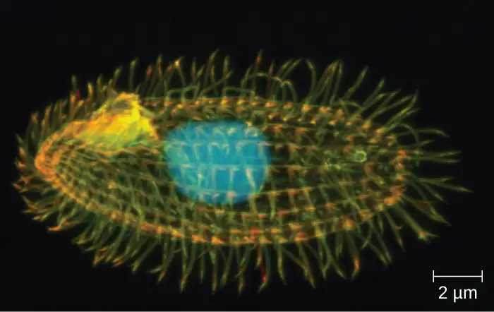
35. Protist taxonomy has changed greatly in recent years as relationships have been re-examined using newer approaches. How do newer approaches differ from older approaches?
36. What characteristics might make you think a protist could be pathogenic? Are certain nutritional characteristics, methods of locomotion, or morphological differences likely to be associated with the ability to cause disease?
5.2 Parasitic Helminths¶
37. Given the life cycle of the Schistosoma parasite, suggest a method of prevention of the disease.
5.3 Fungi¶
38. Which of the drawings shows septate hyphae?
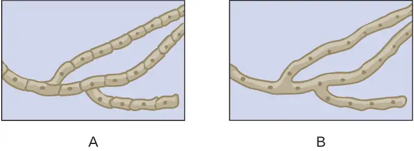
39. Explain the benefit of research into the pathways involved in the synthesis of chitin in fungi.
Adapted from Microbiology by OpenStax, licensed under CC BY 4.0. Access the original for free at openstax.org. Changes: converted to the web reading format of The Open Book Project.
-
Centers for Disease Control and Prevention. “Impact of Malaria.” September 22, 2015. http://www.cdc.gov/malaria/malaria_worldwide/impact.html. Accessed January 18, 2016. ↩
-
RTS, S Clinical Trials Partnership. “Efficacy and safety of RTS,S/AS01 malaria vaccine with or without a booster dose in infants and children in Africa: final results of a phase 3, individually randomised, controlled trial.” The Lancet 23 April 2015. DOI: http://dx.doi.org/10.1016/S0140-6736(15)60721-8. ↩
-
J. Flegr et al. “Toxoplasmosis—A Global Threat. Correlation of Latent Toxoplasmosis With Specific Disease Burden in a Set of 88 Countries.” PloS ONE 9 no. 3 (2014):e90203. ↩
-
J. Flegr. “Effects of Toxoplasma on Human Behavior.” Schizophrenia Bull 33, no. 3 (2007):757–760. ↩
-
Centers for Disease Control and Prevention. “Neglected Parasitic Infections (NPIs) in the United States.” http://www.cdc.gov/parasites/npi/. Last updated July 10, 2014. ↩
-
Centers for Disease Control and Prevention. “Fact Sheet: Neglected Parasitic Infections in the United States.” http://www.cdc.gov/parasites/resources/pdf/npi_factsheet.pdf ↩
-
Won K, Kruszon-Moran D, Schantz P, Jones J. “National seroprevalence and risk factors for zoonotic Toxocara spp. infection.” In: Abstracts of the 56th American Society of Tropical Medicine and Hygiene; Philadelphia, Pennsylvania; 2007 Nov 4-8. ↩
-
Fenwick, A. “The global burden of neglected tropical diseases.” Public health 126 no.3 (Mar 2012): 233–6. ↩
-
de Silva, N., et. al. (2003). “Soil-transmitted helminth infections: updating the global picture”. Trends in Parasitology 19 (December 2003): 547–51. ↩
-
World Health Organization. “South Sudan Reports Zero Cases of Guinea-Worm Disease for Seventh Consecutive Month.” 2016. http://www.who.int/dracunculiasis/no_new_case_for_seventh_consecutive_months/en/. Accessed May 2, 2016. ↩